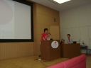
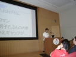

6 月 10 日 午前の部
気象庁によると、関東甲信地方は 6 月 9 日に梅雨入り。
あいにくの天候の中、お台場の真新しい建物の最上階という抜群の
ロケーションで、二日間の日本 Ruby カンファレンスが幕を開けようと
しています。入場時間前から、 国内第一次予選の○×クイズ
厳しいチケット争奪戦を勝ち抜いた参加者の皆さんが続々と集結し、
会場周りは熱気に包まれました。
会場スタッフも万全の布陣を敷いて待ち構えています。 お揃いのカンファレンス T シャツで遠目に判りやすい。 会場デザインとの統一感も高いものでした。ぴちょんくんには負けません(何か違う)。
開会の辞 (09:53)

- アドリブ度 -
- 緊張度 ★★★
- そっかきっちり原稿作ったんだ度 ★★
- ていうか右に会長の高橋さん左に司会のかずひこさんって眼鏡萌えさん萌え氏にしちゃいそうな布陣だよね度 ★★★★
冒頭、司会のかずひこさんの紹介に続いて、
- 日本 Ruby の会会長であり
- 米国開催の Ruby カンファレンスに皆勤賞であり
- 高橋メソッドな
高橋征義さんが、Ruby オンリーのカンファレンスを Ruby ゆかりの地・日本で開催できる喜びを寿ぎました。
開会の辞の後、カンファレンスのスタッフを代表して司会のかずひこさんから、 ご支援くださった企業様の紹介と、来場の方々への行き届いた案内とお願いがありました。
- ロビーにはお茶とお菓子を備えたこと。付箋掲示板を設けたこと。
- 懇親会について: 昼休みロビーに受付を設置すること。若干キャンセル待ちあり応談。
この後、会期中の要所要所に、同様のアナウンスが入りました。
なお当日会場で今井光也作曲のファンファーレが頭の中に響いて仕方なかった人は、 かずひこさんの日記に裏話が書いてありますのでご参照ください。
高橋征義「Ruby の歴史」
- スピーカー
- 高橋征義氏 (株式会社ツインスパーク、日本 Ruby の会)
- 時間
- 10:00〜10:15
- セッション概要
- Ruby の歴史

- 記憶力よすぎ度 ★★★
- archive.org 度 ★★
- (二ヶ国語) メソッド度 ★★★★
- ただ掘り返すだけ？度 -
記念すべき日本での初回カンファレンスの劈頭は、高橋会長による「Ruby の歴史」です。 高橋メソッドを駆使して、Ruby の言語とコミュニティの歴史を概観しました。 まだまだ浅い歴史ながらも、Internet Archive サイトから過去の資料を発掘したりと、なかなか下準備が大変そうでしたが、 軽快な画面切替えなど、元祖高橋メソッドの面目躍如たるものがありました。
分類
まずは仮説として、Ruby の歴史 5 段階説を披露しました。
- 先史時代 (Myth and Oral Epic)
- 記録にない時代。神話と伝承の時代。
- 古代 (Ancient Era)
- ruby 実装系の公開
- 中世 (Medieval Era)
- 日本で普及してくる
- 近代 (Modern Age)
- 世界にはばたく
- 現代 (Contemporary)
- Rails 以降
先史時代
この時代の出来事は、偶に記録が発掘されることで、断片的に知られている。
- Ruby 誕生。1993-02-24。
Ruby 作者のまつもとゆきひろさんによれば (ruby-dev:5173)、 言語という目に見えない存在ゆえ、”ruby” という名前の命名を持って誕生日としている。なお当初 Ruby の R は小文字だった。 “ruby” という名前は、 まつもとさんが構想中だった新言語の名前として、 この日の午後の登壇者でもある石塚圭樹さんの、 IRCでの提案を採用したもので、 もうひとつの有力候補は「Coral」だった。
古代
ruby の実装系が公開される。
- 1995-12-21、当時のフリーソフトウェア開発の中心的存在だったネットニューズの fj.sources において、まつもとさんが ruby 0.95 をポストした。
- この頃のログは現在 google groups で閲覧できる。
- メーリングリストの創設。
- 1996-12-25 ruby 1.0 がリリースされる。
- 1997-07-18 高木浩光さん (現在ではセキュリティ分野のコンピュータネットワーク技術者として著名) の提案により、ruby-list から処理系開発関係の話題を分離して ruby-dev が創設される。
- 1997-09-22 「Perl に代わる次世代のスクリプト言語」としてマスメディアのサイト Internet Watch に掲載される。
- 1998-05-15 Ruby で書かれたアプリケーションの集積所 RAA が設立される (今もあります)。当初は「紅玉的事例貯蔵庫」という名前で、現在のようにシステム化されておらず手動で管理されていた。
中世
日本で普及してくる。
- 1999-10-27 ASCII より、まつもと・石塚共著
 が出版される。
が出版される。 - 2001〜2002 年 Ruby 本出版ラッシュ (なお中世といっても、この頃以降に発行された大量の Ruby 本は、今でも大型書店に行けばそのほとんど全てを手に取ることが出来ます)1
近代
Ruby が世界的に認知される。
象徴的な出来事としては、2002-02-16 に英語のメイリングリストである ruby-talk の流量 (通算メイル数) が ruby-list を超えた。 ruby-talk は 1998 年に設立され、当初は細々と英語で情報をやりとりしていたが、 のちの 2002 年に “Programming Ruby” を出版した Pragmatic Programmers が ruby-talk に参加した頃から流れが変わり、 本の出版も世界的認知に大きく寄与したものと考えられる。
若干前後するが、2001-10-12 には初の Ruby カンファレンスである、Ruby Conference 2001 が U.S.A. で開催される。 日本での同様の Ruby オンリーイベントを見てみると、1999 年に日本 UNIX ユーザー会による Ruby Workshop が最初。これは参加者 100 名程度のものだった。
現代
Ruby へのプログラム開発者の大量流入が起きる。Ruby on Rails が起爆剤となった。
- プログラミングが初めての人、スクリプト言語が初めての人も Ruby を触り始めた。
- Ruby がビジネスになり始めた。
こうして、Ruby は Early Adaptor から Early Majority へとキャズムを越えたのだ (まつもとさんの基調講演でも同じ認識が示されます)。
井上浩「NaCl のオープンソース戦略〜そして今後の Ruby 戦略に関して〜」
- スピーカー
- 井上浩氏 ((株) ネットワーク応用通信研究所 代表取締役社長)
- 時間
- 10:20〜10:40
- セッション概要
- Ruby を軸としたオープンソース事業戦略

- 創業社長の語る社史萌えー度 ★★★★
- へんな会社度 ★
- 中国四国地方の地理案内その (1) 度 ★★
- OSS 支援の幸福な形度 ★★
- 場外スカウト度 不明
いかにも会社トップの講演らしいセッションとなりました。 実は Ruby 作者のまつもとさんは、井上さんの経営する会社でサラリーマンとして働いています。 ちょっとオフレコ気味の話題も織り交ぜつつ、今後の Ruby 市場の展望と、 オープンソース技術を武器とできる会社らしい独特の事業戦略が紹介されました。
会社紹介
- 略称 NaCl は憶えやすいですね。
- 「島根県をイメージできない方もいるかもしれませんが」。なお島根県の県庁所在地は松江市です。
- 事業の中心は ORCA (日本医学会 (日医) 標準レセプトソフト)。
- 新卒は 3 人／年。中途採用も年に数名。今も募集中とのこと。「一緒に働いて楽しい人を採用したい」。
沿革
- 「創業→低迷→転換→バブル幻想→OSS 再生→ORCA 拡大→停滞→黎明」。
- 幻想期に社名を変更したが、その後 NaCl を再設立した。
- 日本 Linux 協会の初代会長である生越昌己さんが地元の島根で立てていた linux.or.jp のサーバをまかなえる法人を作りたい、というのが設立の契機。
NaCl と オープンソース
- 社員の開発したオープンソースの権利は個人に帰属する。
- そういう意味では、オープンソースは会社資産を増やしてはいない。
- 社命として開発したソフトウェアもいくつか (Rast・Labor シリーズ・島根県 CMS をオープンソース化するプロジェクト) ある。
NaCl と Ruby
- まつもとさんは途中入社。その後、多くの Ruby のライブラリやアプリケーションの有力開発者が入社している。
- 「松江といえば Ruby」をウリに (？)、松江駅前に 2006-07「Ruby City Matsue」が開設される。
NaCl の Ruby ビジネス
- 「きわだったものはないんですが」。
- 講師陣が超豪華な Ruby on Rails 講習会を東京で開催。「講師は豪華だがビジネス分野では意味がなかったかも」。
今後の Ruby 市場
- オープンソースをビジネスモデルに取り入れている会社は、今では国内外問わず多数あるが、NaCl では オープンソースの「リテラシーの差」を売り上げにつなげるという戦略。
- ppp 技術者 (perl, php, python) は引っ張り凧 (U.S.A.とか)
- Ruby の普及は「そこ」まで来ている。
- Ruby がコミュニティの意志で発展するのをサポートしたい。
基調講演: まつもとゆきひろ「State of the Dominion」
- スピーカー
- まつもとゆきひろ氏 ((株) ネットワーク応用通信研究所 特別研究員)
- 時間
- 10:40〜12:00
- セッション概要
- Ruby による「世界制覇」の現状を語る
- 講演資料
- http://www.rubyist.net/~matz/a/rk2006.zip (基調講演とパネル資料が同梱されています) 
- 基調度 ★★
- やっぱ愛でしょ、度 ★★★★
- Onion 度 ★★
- ヒゲ度 ★
- 巨大コミット歓迎度 -
初日の基調講演は、もちろん Ruby 作者からのものです。 冒頭に唐突に音楽が流れ、まつもとさんが「BGM つきですか！」とおどける一幕がありましたが、これを奇禍として初日午後からは、休憩時間中に音楽を流して休憩終了を演出するようになりました。
一般教書演説？
講演タイトルの元ネタはアメリカ大統領の一般教書演説 (State of the Union) 。 「”State of the Union” をもじった “State of the Onion” を毎年やる人がいるわけですね。とても楽しいのですが」
- プログラミング言語 Perl の開発者 Larry Wall 氏の基調講演はとても真似できないが、
grep 'nion$' wordsの結果から、「State of the Dominion」というタイトルに決定。
世界制覇への道
“Dominion” というと「支配」「統治」。つまり “State of the Dominion” = 「Ruby の世界制覇への道」?
- 「プログラミング Ruby」の第二版の日本語訳が間もなく出ます。7 月上か中ぐらい (現在、著者校正中とのこと)。
- Ruby は「話題になっている」言語 (シェアとかはおいといて)。制覇に向かっているといえなくもない。
話題になってる理由は？
- キャズムを超えた
- 単一セグメント (Webアプリ) での成功 : Ruby on Rails による
- 周囲へセグメントへの波及 : 「Rails で使われている Ruby ってどんなの？」
- マジョリティにアピール
- 成功する言語設計者にはヒゲがある
- 「2004 年から作者がヒゲをはやしたから？」
愛されてるから。
- 「Ruby は愛されている言語」。love hate ratio も高い。
- とくにホットな人々から愛されている
- 達人プログラマーの Dave Thomas とか、Rails の DHH とか。
- 他のプログラム言語開発者にも愛されている
- Brad Cox (Objective-C) とか Alan Kay (Smalltalk) とか。
- Alan Kayと話したら Smalltalk-76 がお気に入りと言っていた (80 は好きじゃないらしい)。
どこが愛されるの？
- 「Ruby は普通のプログラマ向け言語」
- オリジナリティは「そんなに……ほとんど……ぜんぜん、ない」「世にあるものを、ジェンガのように組み立てているだけ」
- 理解に特殊な頭の使い方を要求しない、普通の人向け、普通のプログラマ向けの言語であることが重要である。
どんな愛？
「言語を作る人は、人類の中でも特殊な人なので……」と庇護を求めつつ、リクエストがあるから作ったのではなく、また改良してきたのでもない、言語そのものへの愛、また言語ユーザへの愛が謳われました。
FAQ
あらかじめ予想できる項目についての想定問答集。
- 2.0 に関しては、パネルに回します。
- 「まつもと」がひらがななのは identification のため。まるみをおびてるのがすき。
- Google で検索すると 1/3 はギタリスト。カンペキな identification はあきらめます。
-
「Matz にっき」が 1 週間遅れになっている理由は？
- 基本的にはなまけものだから。気合が出るのが数日に一回。セキュリティも配慮。
- 普段は？
- Ruby つくってます。渉外。原稿書き。ああぬるま湯。
- NaCl に就職？
- その件につきましては井上に。
質疑応答 (11:13〜11:51)
途中でスピーカー控室方面からの質問が押し寄せる事態に。
- Q1 (MoonWolf さん)
- Ruby 1.8.4 のリリースエンジニアリングはうまくいったが、その後はどういう形になっているのか？
- A1
- 1.8.5 はいつリリースするか決めていない。同じペースを維持する必要はない。頭の中では 8 月ごろを考えている。
- Q2 (Yugui さん)
- Web サイトに他の言語との比較ページが過去置かれていたが現在はなくなっている。あれはいつからあったのか。今封印を破って書くとしたら、どんな言語を足したいか。
- A2
- 1996 年に Web サイトができたころからありました。みなさんジョークと判ってくれないので消しました。特に足したい言語はありません。
- Q3 (江渡さん)
- 最初の Ruby 本 () の改訂版は出るのか？
- A3
- あんまり期待できない、という気がします。めちゃくちゃ筆が遅いので。版元 ASCII の方針転換もあった。版権ひきあげれば道筋はつくのかもしれない。それ (版権を引き上げること) は可能。
- Q4 (MoonWolf さん)
- ライセンスについて。現在のデュアルライセンスは、商用パッケージに組み込むのにやりづらい気がする。デュアルにするべきなのは 2、3 の C プログラムだけなのだろうから、それを書き換えて単一ライセンスにはできないのか？
- A4
- Ruby ライセンスは GPL と非互換なので、GPL とのデュアルをやめて Ruby ライセンスだけにすることは、ありえない。第 3 のライセンスに変更することは、ありえるかもしれない。Ruby ライセンスには、著者がライセンス事項に相談して……という条項があるので、めんどくささを乗り越えられれば、技術的には可能。現在は、ニーズもシーズもないという認識なので、変えようと思っていない。
- Q4 (MoonWolf さん)
- GPL があるので、Ruby インタプリタごと売りたいときに困る。
- A4
- すでに Ruby インタプリタを組み込んだ「RPG ツクール XP」が市販されている。Google SketchUp もインタプリタがまるごと入ってる。ライセンスの主張を勝手に変えたり入手先を隠したりしてはいけないが、きつい制限にはなっていないと思う。
- Q5 (卜部さん)
- 当日 (6/10) 朝 COPYING が一行、英語だけ変更になっていた。日本語版とどっちが正しいのか？ GPLv3 よけ？
- A5
- COPYING.ja も変えときます。当面は GPL に関しては GPLv2 一本でいく。GPLv3 が正式に出て、納得したときには変えるかも。
- Q6 (青木さん)
- 当日 (6/10) 朝の変更で、コンパイルできなくなってるらしいんですけど。中田 (伸悦) さんが今 (控室で) パッチをつくってる。コミットする前にコンパイルしてるのか？ どこでも通らないらしいんですけど。
- Q6 (akr さん)
- miniruby ができたところまでしかコンパイル結果を確認していないのか？ むしろコミットを一度にやるなと。もっと細かくやれと。(背景から大拍手。) だめなの？
- A6
- 今後気をつけます。(コンパイルは) 昼には直ってると思います。
- N6 (かずひこさん)
- subversion にしろって話につながる？
- Q7 (ごとけんさん)
- 今、別の言語を作ってみたいと思うことはあるか。
- A7
- 最近 Haskell の本を読んでいて、Haskell の遅延評価と参照透過性は魅力的。Ruby じゃ絶対出来ないことなので。ただし、それを自分で出来るとも作るとも言わない。
- Q8 (市川さん)
- Ruby に標語はありますか？
- A8
- 「Enjoy Programming」。「名前重要」というのもあるが、これは設計ポリシー。
- Q8 (市川さん)
- だれかに勧めるときに薦めやすいので。
- A8
- 「Enjoy Programming」でいきましょう。
- Q9 (小波さん)
- Ruby の原型は、先史時代 (の前)、どの辺で発想されたのか？ 言語をつくる人になりたいと思ったのはいつ頃？
- A9
- 技術の深掘りをいろいろな人がしているが、もぐってもぐって、ハードウェアにたどりつく人、OS に行き着く人、言語屋という蔑称をいただく人、といる。たしか高校生 (15 歳とか) で、今あるものは気に入らないから自分でつくろう！と思った。その後色々作ったが、実用レベルに届いたのは Ruby が初めてで、たぶん最後だと思う。
- Q9 (小波さん)
- この先は？ これは清算して新しいものを、ということが起こるか？
- A9
- やりたいことは今の Ruby の範囲で実現できている。2.0 リリースまでは、何もない。
- Q10 (Zev.Blut さん)
- いちばん好きな Ruby 文法は？
- A10
- ひとつはブロック。いちばん Ruby ぽいので。変数の前に記号付けてスコープを表現する点も。これを思いついたのは子供を抱いてるときで今でも思い出す。今でも一番下の子供を抱いてるとき「多重代入がー」と同じことをしている。
- Q11 (野村さん)
- ジェンガという話が興味深かった。逆に、積んでいて「しまった」と思った積み方はなかったか？
- A11
- 文法上、yield が先に入って、ブロックつき引数を後で導入したとき yield が邪魔になった。あと String で、in-place で mutate するしないがごっちゃになってよくない。Perl からもってきた組み込み変数の 98% は後悔してます。
- Q12 (高木 gollum さん)
- ruby-list の「メニューのループについて」、のスレッドでは、次々と違う実装が現れて、Rubyist たちには求道的なところを感じました。どうしてこういう雰囲気になるのか？
- A12
- やりかたはいくらでもあるんだけど、ましなやり方とそうでもないやり方がある、ということだと思う。一歩先に行きたくてわいわいがやがや。楽しいじゃないですか。golf と同じ。という人たちが集まってるんじゃないか？ Ruby Quiz も同じか？ (
 は英語では出ました。)
は英語では出ました。) - Q13 (島津さん)
- 言語の動的な部分を勉強したいときに Lisp も勉強した方が良いのか Ruby だけで良いのか？ (Matz にっきを読んで)
- A13
- 現時点でいうと、自分が普通のプログラマだと思うなら学ぶ必要はない。1958 年に出来たものにしてはすばらしい。バリアの高さと得られるパワーのトレードオフではないか。
- Q14 (竹迫さん)
- Ruby 使うとモテるようになりますか？ お金は Rails を使えば大丈夫なので(？)。
- A14
- 奥さんやお相手に「ルビーとパールどっちがほしいですか」って訊いてみたらどうでしょう。うちの奥さんは「パール」って言いましたけどね。わかってていうからヤだよね。
- Q15 (上野雄大さん)
- 極端な言い方をすると、まつもとさんに影響されて自分の言語を作りたくなっています。そんな人に向けて、ひとことあれば。
- A15
- 自分の作った言語を愛してあげてください。愛のある言語が生き残ると思うので。
- Q16 (宮川さん)
- 今の Web って JavaScript 書かなきゃいけない。ブラウザで Ruby が動けばすばらしいと思うのですが？
- A16
- それはそれですばらしいことだと思うんですけど。確かにもうちょっとマシなプログラミング機能があってくれてもいいんですけど。 (とくにリッチクライアントが) ほしいんだけど、どうやったらみんながそれを手に入れられるのか、は別問題でして。
- Alan Kay いわく「なんで HyperTalk が消えてしまったんだー」。
- Q17 (akr さん)
- 新しい機能を Ruby に入れたくて提案しても、名前で拒否されることがよくある。けれども何年間も要求していると、最初に拒否された名前で入ってしまうことがある。その加減は？ 基準は？
- A17
- ない。あったらいいんだけど。あきらめずに言い続ければいつかは入る……かも。今、eigenclass に心が揺れつつあるんですけど。
- Q18 (柳田さん)
- 最近の Matz にっきを読んで、「驚き最小」とご自分では言われなくなったことに気づいた。使わなくなった理由、気持ちは？
- A18
- 2001 年から 2002 年の前半に、「気持ちをよく説明してくれてるから」よく使った。おかげさまで人口に膾炙はしたが、予想以上に一般化されて捕らえられるようになった。受け取った方が、「ひとりひとりは違う」「みんなが同じ期待はしない」と思わなくなったからなのか？ comp.lang.ruby FAQ などにはその旨の注意が追加された。
講演最後に
「どうしても訊いておきたいことがあった！」。
- Q
- 仕事で Ruby を使ったことのある人、挙手を。
- A
- 会場の 1/3 (80 人) くらい。
参考サイト
- では「成功した言語」設計者のヒゲ画像を。
- C のカーニハン (ヒゲ): http://blog.codingnow.com/mengyan/C_BK.jpg#
- Unix のトンプソンとリッチー (ヒゲ): http://blog.codingnow.com/mengyan/C_KT_DR.jpg#
- Smalltalk のアラン・ケイ (ヒゲ): http://blog.codingnow.com/mengyan/smalltalk.gif#
- C++ の Bjarne Stroustrup: http://blog.codingnow.com/mengyan/c%2B%2B.jpg#
- Java のジェームス・ゴスリング (ヒゲ): http://blog.codingnow.com/mengyan/java.jpg#
- BASIC のトーマス・カーツ (ヒゲ): http://blog.codingnow.com/mengyan/basic.gif#
- Perl のラリー・ウォール (ヒゲ): http://blog.codingnow.com/mengyan/perl.jpg#
- Python の Guido van Rossum 氏も、まつもとさんと同時期にヒゲの仲間入りを果たした模様。
- Objective-C，C#，Ada，Prolog などの設計者にはヒゲがありません。うーむ。
- まつもとさんによる、まつもとゆきひろ氏の紹介
{kind=link}
{kind=link}
{kind=link}
{kind=link}
{kind=link}
{kind=link}
{kind=link}
-
Ruby 本の出版状況を amazon などで調べてみると、2001 年に大きなブームがあったことが分かります。今年以降は Rails 関連書籍による第二次ブームが起きることが予想されます。 ↩